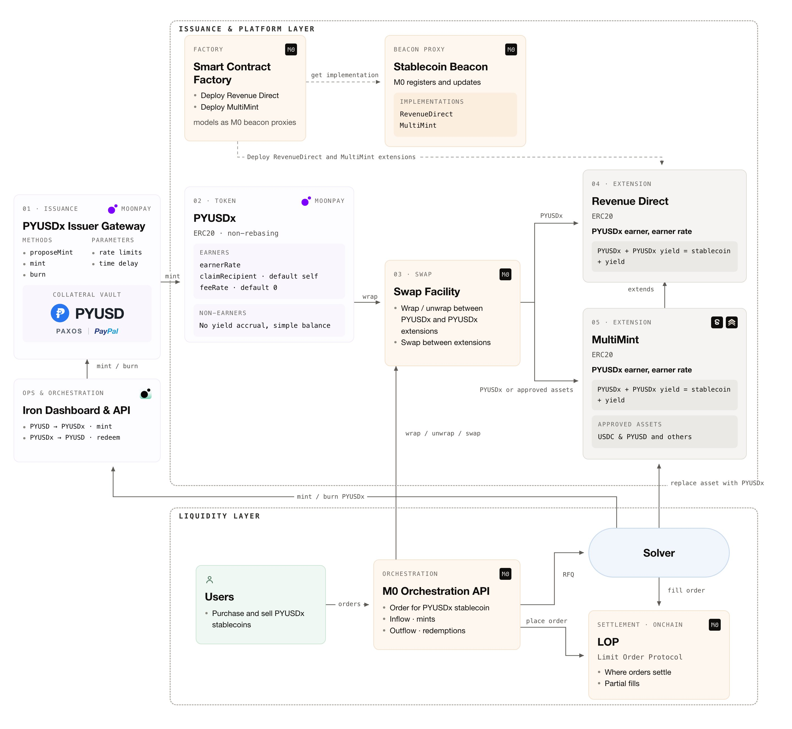
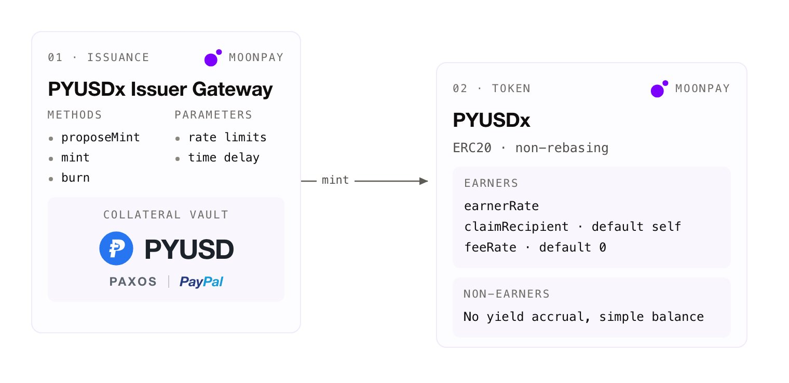
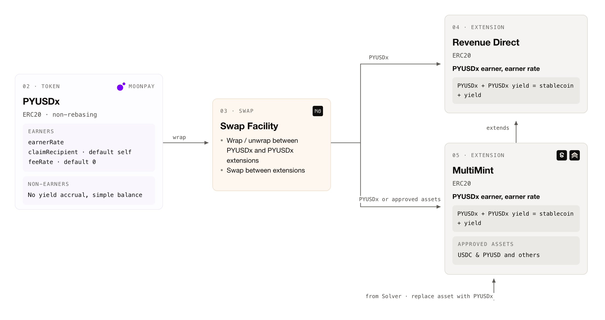
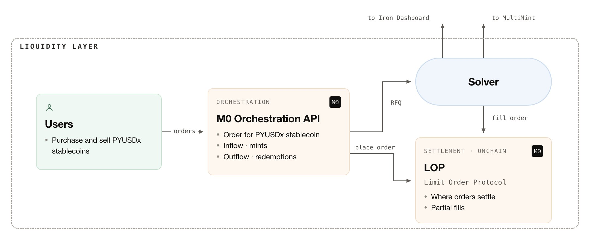
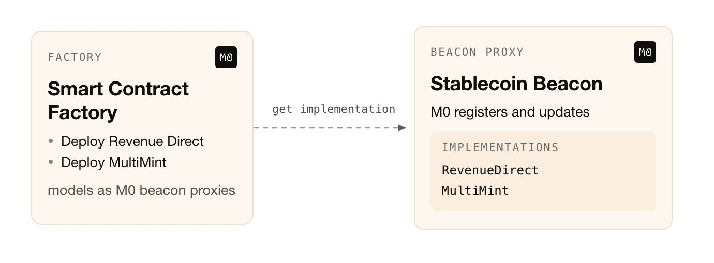

📖 Reading time: 7 min
👀 Viewing time: 5 min
A note on terminology. Throughout this article, the terms stablecoin and extension are used interchangeably to refer to the tokens issued on the PYUSDx platform. This article reflects common market terminology, not a legal or regulatory characterization of these token products.
On Sep 9th, M0, PayPal, and MoonPay officially launched the first white-label stablecoin platform. Its design is built on two years of developing the M0 Extensions framework, which powered the launch of 20+ extensions across 15+ EVM chains, with automatic rewards accounting and the ability to redirect rewards to selected recipients.
How is it built? Let’s dive into the weeds while keeping the high-level design in sight.

Part 1. It All Starts with the Base X Token
PYUSDx is the base X token of this developer platform. It is backed 1:1 by PYUSD and reflects the accrual of rewards from its native token, PYUSD.
PYUSDx is an ERC-20, non-rebasing token with custom-built reward accrual and redirection logic. The earner manager can add so-called earners and set their reward rate, an optional claim recipient, and a fee. Earners automatically accrue rewards on their holdings using the principal and earner-index accounting model. For extra details, review this longread.
Compared to the first M0 Extension, WrappedM, PYUSDx allows earners to have different rates and tracks a separate rewards index for each of them. Such rewards are claimed explicitly.

Why does this matter, and why is it the key to the developer platform? This automatic reward accrual and optional redirection unlocks several use cases:
- Building stablecoins as wrappers of PYUSDx, where the wrapper is an earner with a defined rate. All PYUSDx rewards are converted into rewards of the end extension. In this case, the claim recipient of the PYUSDx is the stablecoin contract itself.
- Supplying PYUSDx into DeFi venues such as DEXes, vaults, and lending markets, where the end contract automatically accrues rewards that are redirected to a designated claim recipient — commonly one other than the contract itself.
- Allowing an earner to hold a balance and earn rewards on it. For example, the M0 solver holds an inventory of PYUSDx for filling end-stablecoin orders and accrues rewards on that inventory.
PYUSDx is a token issued by MoonPay via the M0-built Issuer Gateway. Given the onchain nature of PYUSD, minting and redemption from and into PYUSDx are performed with minimal delay to support security and operational continuity.
Part 2. PYUSDx Extensions and the M0 Swap Facility
As mentioned previously, platform stablecoins like Concrete, Cap, and Saturn are ERC-20 compatible wrappers of PYUSDx: they are registered earners with automatic reward accrual and a standard set of compliance policy checks, including pausing and account freezing.

The most popular extension model, and the one that has found widespread usage and product-market fit, is MultiMint. It allows the extension owner to enable instantaneous 1:1 minting of the end stablecoin against stablecoins other than PYUSDx, such as PYUSD or USDC.
Behind the scenes, the M0 solver replaces these tokens with PYUSDx. The extension builder can set custom asset caps and whitelist or delist assets as the need arises. Currently, the M0 solver replaces such tokens 1:1. Since rewards accrue only on PYUSDx, temporarily not all of the extension’s supply accrues rewards claimable by the extension builder — a tradeoff the extension owner is willing to take for the convenience of user mint flows.
Swaps between extensions and PYUSDx happen permissionlessly via the M0 Swap Facility, 1:1.
Additionally, bridging of PYUSDx and its tokens is supported by a custom PYUSDx Portal utilizing the LayerZero Bridge Adapter.
Part 3. Liquidity Layer
To serve PYUSDx end-extension user flows, M0 provides several mechanisms:
- Inflows via MultiMint extensions with enabled stablecoin inflows, where deposited stablecoins are replaced with PYUSDx by the M0 solver.
- Optional intent-based inflows via the M0 Orchestration API and LOP (Limit Order Protocol), where user orders are filled by a network of solvers. M0 LOP follows the standard intent-based order flow but additionally allows customized partial fills of large orders.
- Outflows are served exclusively through the Orchestration API and LOP.

All inflows and outflows of PYUSDx-issued stablecoins are served via the M0 Orchestration API. The M0 solver intelligently rebalances its inventory, which consists of end stablecoins, PYUSDx, and external stablecoins like USDC and PYUSD. When needed, inventory is rebalanced through available onchain venues or, if extra PYUSDx must be minted or redeemed, through the MoonPay Iron Dashboard & API.
Part 4. Nerdy Extras & Last but Not Least
The technical architecture has a few unique points worth diving into. One example: the ExtensionFactory contract and its per-type beacon registries. Each extension type, like RevenueDirect and MultiMint, has its own beacon, and M0 registers every new implementation there as a numbered version, with older versions kept and still addressable. Extensions deployed through the factory are beacon proxies that resolve the current version on each call, so they inherit M0’s upgrades by default, with no action needed from the builder. Upgrades are never forced: an extension’s version manager can pin it to any registered version, which detaches the extension from the beacon’s latest implementation, and can unpin it later to rejoin. Code and agentic nerds can dive deeper here.

While the PYUSDx Developer Platform is not even a month old, still growing its TVL and its set of partner extensions, a new spiral is inevitably forming for the project and its core team. What is it? Time will tell. So, as always, onward to the next wave 🌊